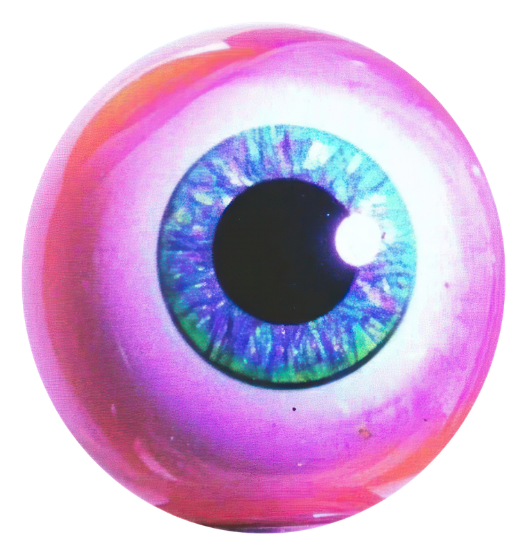

You know what’s really rude? Feeling like shit, and knowing exactly what you’re supposed to do about it. Eat a proper meal. Get outside. Go for a walk, take your shoes off if you can, feel the grass. Drink water. Try not to smoke. Do the good habits, skip the bad ones. And then you actually do the walk, and it actually works, and somehow that’s the most annoying part of all.
Anyway. Here’s what’s genuinely changed things for me, not the aesthetic of self-improvement, the actual stuff.
Atomic Habits, by James Clear. Still the book I’d hand someone first.
Learning to breathe through my nose instead of my mouth. Sounds small. It isn’t. Learning to actually notice my breath, and use it, has become one of the fastest ways I have to calm myself down.
A regular journaling practice, not a crisis one. For a long time I only journaled when I was already at my worst, which means all I ever had was a record of my worst days. You need to write on the good days too, or your journal just becomes a monument to how bad things get. Pick a rhythm, daily, weekly, whatever you’ll actually keep, and use it on ordinary days as much as hard ones.
Taking care of how you look, even when nobody’s watching. This is not the same as being “put together” for other people, this is about the level of effort you show to yourself. If you spend a lot of time at home with nobody around, it’s tempting to live in the same ratty, stained sweatpants every day because who’s going to see. But if a video call caught you right now, would you want to run and change first? Presenting yourself a certain way, even just to yourself, even if literally no one else will ever see it, changes how you feel. Not because you owe anyone effort but because you’re showing yourself you care.
Cutting caffeine. My constant, background anxiety disappeared completely once I switched to decaf. Not the situational kind of anxiety, everyone gets that sometimes, I mean the anxiety that’s just always humming under everything. Gone. I checked, more than once, that it really was the coffee. It was.
Gamifying my life and habits. In a world that rewards dopamine, having an app that rewards you in a way that feels tangible will make a huge difference. I love the app Habitica (not sponsored) because it looks like an 8-bit RPG, you have an avatar, completing a habit or task gives you Experience, missing them costs you health.
Actually looking at your relationship with alcohol. If you’ve ever wondered whether you use alcohol as a crutch, try a full year sober. Not because you need to quit forever, but because you learn what it’s like to be in a room full of people drinking while you’re completely clear. You don’t have to swear off it permanently. But you should know what it’s like to not need it.

Reconsidering hormonal birth control, if you’re struggling. I’ll be honest about this one, because I think it matters. My depression genuinely lifted when I came off hormonal contraception. I’m on a copper IUD now, which isn’t perfect either, every method has its own tradeoffs, but it worked for me. I want to be careful here, because there’s a lot of fear-mongering around this topic, and that’s not what this is. The pill and hormonal contraception have been an enormous breakthrough for women, genuinely, and testing and options still need to keep improving. Both things are true at once: it’s been a huge net good for women everywhere, and it doesn’t work for every single body. Mine included.
Getting your blood tested regularly, even if nothing feels wrong. Every six months, ideally. You don’t know what you’re deficient in until you check, and women in particular are often low in iron without realising it. Here’s the part that actually changed how I think about it: there’s a difference between the range a doctor calls “normal” and the range that’s actually optimal for your specific body. Normal is just reflecting the wider population. I was once told my vitamin D was “normal” when it was sitting a long way below what’s actually considered a healthy level. Ask the follow-up question. If something’s nagging at you, a pain, a niggle, anything, go get it checked and close that loop instead of carrying it around.
Closing your open loops. This is the one that changed how my whole brain feels day to day. Open loops are the decisions you haven’t made yet, the errands bouncing around unanchored in your head, the things you keep meaning to deal with. Write them down. If there’s a decision to make, make it, then let it go. Every open loop you’re carrying is quietly draining you, and you usually don’t notice how much until you close a few and feel your brain go quiet.
That’s the list, for now. Let me know which of these you’ve actually tried, and which ones changed things for you too. I’m sure there are more I haven’t thought of yet.
← Back to the Journal